手順より先に、これを決めます
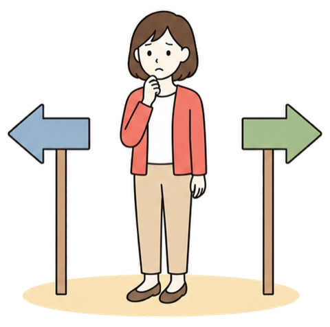
章があるのに何を言っているんだ、と思うかもしれません。それでも先に置きます
どちらかが嘘をついているわけではありません。目指している場所が違うだけです
ストーリーズなんてやらなくていい、と言う
リールの再生とフォロワー数を、そのまま売上に変える
運用しないと売上は作れない、と言う
「この人から買いたい」の形を先に作る
正解を探しているうちは、いつまでも始められません。分けてから選びます
景色を知る
代償を知る
自分で選ぶ
この回でやるのは、どちらが優れているかの判定ではありません。両方の中身を先に見てから、自分で決める
選んだあとに迷わなくなるので、今月の時間の使い先がその場で決まります
ここは先に消しておきます。分かれ目は、扱っているものではありません
その商品の良さを、より多くの人に届ける
自分を知ってもらう必要が、そこまでない
自分が使ってきたという前提の上で、「この人が言うなら」と受け取ってもらう
先に自分を知ってもらう必要が出る
安いものと高いもので、お客さんが確かめていることは別物です
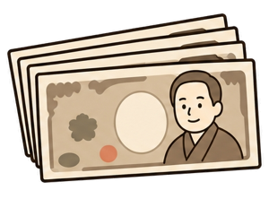
説明が足りないから売れない、と思っている人がとても多いところです
ここを取り違えると、単価を下げにいって、結局売れなくなります
値切りたい、という意味だと読む
値段を下げて解決しようとする
失敗したくない、という意味
安心感と憧れを、売る前に作っておく
誤解されやすいところです。使い方がまるごと違うだけです
リールを回す
1枚だけ出す
ハイライトへ
プロフから
リンクを踏む
毎日の発信としてのストーリーズはやらない。でも、置き場所としてのストーリーズは使う
この形だと、リールの再生回数とフォロワー数が、そのまま売上に効きます
数の勝負で伸ばす道です。ちゃんと大きな金額が動いています
再生が回るアカウントには、企業から依頼が来る。1本10万円の案件が、10本で100万円
リールとハイライトで配る。1人を深くするのではなく、通る人の数で、売れる数を最大化する
固定案件の取り方はSTEP15でまとめてやります。ここでは「そういう道がある」とだけ持っておいてください
「だからやりなさい」ではありません。目指す金額によって関係のない話です
月500万円
運用せずには、ほぼ無理
教育と憧れが作れないから
月30〜100万円
やらない道でも届く
リールに全部の力を向ける
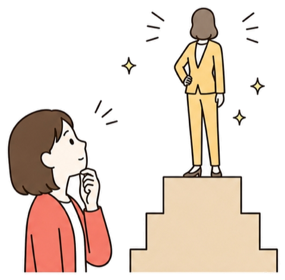
どちらも正解
目指す金額で変わる
自分の行き先から選ぶ
自分がどちらに近いか、名前ではなく中身で確かめてください
固定案件で伸ばしていきたい人
いい商品を、とにかく多くの人に知ってもらいたい人
自社商品をやりたい人
売上を大きく伸ばしたい人
信頼関係を結びながら、発信者として活動したい人
考えるより、答えたほうが早いです。1分で終わります
売るもの
欲しい額
話せるか
売りたいものは自分で作ったもの、または自分がずっと使ってきたものか。はい＝やる側です
どちらも「あなた自身を信じてもらえないと動かないもの」だからです
来た案件を紹介する人・幅広く出したい人は、2つ目に進んでください
いちばん多い辞退の理由です。ただ、前提が違っていることがほとんどです
▼
ここを書かないとフェアではないので、正直に置きます
たくさんの人にリーチするリールを作らないといけない
台本力・撮る力・編集力を、やっている人より磨く
毎日、ストーリーズの時間が要る
そのうえで、リールの台本と編集も上げる
高いコースの店も、回転率の店も、どちらも成立します。混ぜたときだけ別です
お客さんとの会話を、作り込まない。内装も器も普通のまま
提供も速くない。席数も少ない。看板も分かりにくい
それなのに、単価だけ高くしたい。この店は成立しません
やらないと決めること自体は、まったく問題ありません
収益を大きく上げたい。でもストーリーズは、運用したくない
案件を受けたいのに、台本もガチらずフォロワーも伸ばさない
どっちつかずのまま、両方を中途半端にやる
逆はいいんです。運用しながらアカウントも伸ばす。これはやっておいたほうがいい
発信をしていると、必ず「何が正解なんですか」にぶつかります
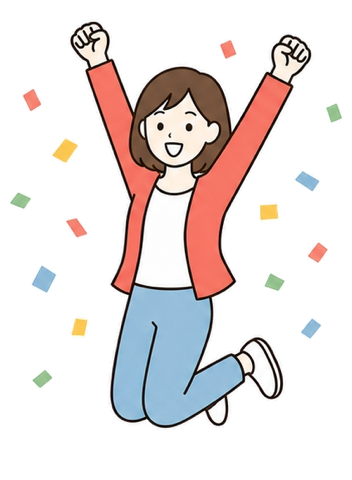
正解とは、自分が選んだ道を、正解にしていくこと
そのために要るのが、選ぶ前にメリットとデメリットを両方分かっておくこと。やらないと決めた人は、STEP14へ進んでかまいません。ただしそのときは、STEP7からSTEP10（企画・台本・撮影・編集）に戻って、もう一段磨いてから進んでくださいだから、自分の話をしていい場所です
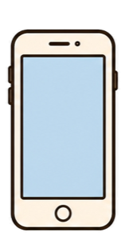
ここを勘違いしたまま始めると、いちばん多い失敗をします
アカウントの営業マン
知らない人に届く。前提の説明が要る
人柄とギャップを見せる場所
すでにあなたを知っている人に届く
いちばん大事な性質です。ここから全部が決まります
同じ人が話しているのに、中身の作り方が正反対になります
まったく同じ言葉が、場所によって別の重さで届きます
知らない人には響かない
「知らんがな」で終わる
あなたへの興味が、まだそこにないから
リールを何本か見て、フォローしてくれた人
もう、あなたに少し興味がある状態
コンセプトを決めるときに、「言いたいことは捨てない」と言った回収です
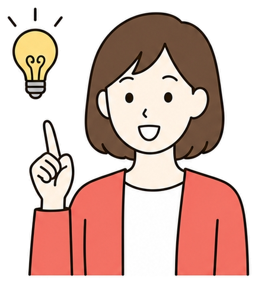
捨てる必要は、ありませんでした。出す場所が違っただけです
わざわざ家まで来てくれた人に、街頭と同じ話をしてはいけません。ジャンルから外れるからと引っ込めていた話は、ここで全部使えます数字は、判断するために見ます。上げるために見るのではありません
物差しがあると、落ち込むかどうかではなく、直すかどうかで判断できます
物差しを渡したあとで言うのも変ですが、ここを間違えると発信が薄まります
始めたばかりの人から、いちばんよく届く声です
▼
「消えるなんてもったいない」と思うかもしれません。逆です
残らない
気軽に出せる
量が出せる
人柄が伝わる
消えるからこそ、完璧じゃなくても出せます。この順番で、人柄は伝わっていきます
そして、消えるのは他人から見える状態だけ。自分では、後からぜんぶ見返せます
アーカイブという場所に、出したものが全部残っています
右上の三本線
アーカイブ
上で切り替え
選んで開く
プロフィール画面の右上から入ります。画面のいちばん上をタップすると、種類を切り替えられます
この機能は、思っている以上に使います。投稿したら終わり、にしないでください
消えたように見えて、全部あなたの手元に残っています
反応がよかったものを見返して、同じ構成でもう一度作る
ハイライトに追加する。STEP6でやった、プロフィールに残すやつです
3つ目は、去年の同じ時期に何を話していたかを見ること。自分の変化が、いちばん強いネタになります
同じ出来事でも、出す場所で形がまるごと変わります
「作り置きが傷む人がやっている3つのこと」
失敗を、知らない人の役に立つ形に変換する
「3日で全部だめにした。正直へこんでる…」
なぜそうなったか、次はどうするかを、そのまま話す
出来事1つで2種類のコンテンツが作れる、という話でもあります
機能そのものは他のアプリにもあります。でも、使われ方が違います
「フォローした人の今日」を見に行く習慣が、ユーザー側にすでにある
YouTubeやTikTokを開いて、まず誰かのストーリーを見に行く人はいません。動画を見て終わりです。他のアプリなら自分で作らないといけない習慣が、インスタでは最初から用意されている。ここを使わない手はありません始めたばかりの人が、ほぼ全員やってしまうところです
タメ口にするだけでは、独り言にはなりません
感情のところに置く。「血の気が引いた😱」のように、言葉で説明しきれない部分を持たせる
「…」を使っていい。言い切らずに落とすと、独り言らしくなる
3つ目は体言止め。「子どもの朝ごはん、間に合わないやつ」のように、文を最後まで作らない
ここを混ぜると、親しみではなくただの手抜きに見えます
崩しているのではなく、見直していないだけに見える
何を言っているか分からない文。独り言と、伝わらない文は別物
崩し方が雑だと、親しみではなく雑さだけが伝わる
前のレッスンで手が止まった人が、いちばん気にするところです
▼
「うまい人を探す」と言われても手が止まるので、内訳を決めます
見るときに、どこを見ればいいかを先に決めておきます
1枚目が、いきなり本題から入っているか。状況の説明から入っているか
1日に何枚出しているか。朝に1枚だけ出して、夜にまとめて出す人が多い
3つ目は文字の量。うまい人ほど、1枚の文字が少ないです。ここは数えれば分かります
この章を通して、ずっと言い続けることを先に置いておきます
強いのは、うまく喋れる人ではなく自分のことを語れる人
情報はどこにでもあるけれど、あなたの話はあなたにしかないからです。逆にここでつまずく人がいちばん多い。「自分の話なんて誰が興味あるの」と思って有益情報だけを流し続けると、あなたはいつまでも「便利なアカウント」のままです話すことがないのではありません
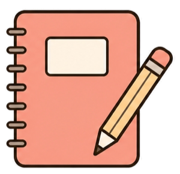
「ストーリーズで何を話せばいいか分かりません」への答えです
「行き先」と言うと難しく聞こえますが、中身はこれだけです
ゴールを決める
出来事を探す
型に乗せる
今日のストーリーズを見た人に、どうなってほしいかを先に決める。そこにつながる出来事を、今日の自分から探す
出来事を探すのは2番目です。ここを1番目にした瞬間に、ネタは尽き始めます
今日のストーリーズがどれなのかを、1つだけ決めてください
「分かる」と思ってもらう。落ちは要らない
人柄を知ってもらう。ギャップを見せる
判断の基準を渡す。「そうだったのか」
答えてもらう、見てもらう、買ってもらう
1本のストーリーズに、ゴールは1つ。1日のうちに全部やる必要はありません
言葉だけだと掴みにくいので、1つのジャンルに落とします
出来事は1つです。「作り置きを3日で全部だめにして、捨てた」
共感
親近感
教育
行動
共感なら、同じ失敗をしたことがある人に向けて話す。「私だけじゃなかった」と思ってもらえたら成功です
親近感なら、うまくいっていない側の自分を見せる。完璧な人だと思われている状態を、わざと崩しにいく回です
残り2つも、同じ出来事から作ります
ここが引っかかる人が多いので、はっきり書きます
つながっているように見える人は、つなげているだけです
「今日あったことが、たまたま今日伝えたいことと完璧につながっていた」なんてことは、まず起きません。プロでも起きません。出来事とゴールがきれいにつながっていなくても、こじつけてかまいません。むしろ、こじつけるのが仕事ですいきなり結論や問いかけから入ると、見ている人は置いていかれます
様子を描く
共感を呼ぶ
問いかける
その場の様子を見えるように描く。「こういう経験ある人いると思うんだけど」と共感を呼ぶ。そこで問いかける
この3段を踏むだけで、どうでもいい出来事が、ちゃんと見られるストーリーズになります
どのジャンルでも共通して使える入り口を、まず作ります
入り口の3枚はまったく同じです。変えているのは着地だけです
「1回200円だけど、週2回で月1,600円。年間だと2万円」「やめたんじゃなくて、買っていい日を決めた」→お金の使い方の基準に着地
「家に食べるものがあるって、それだけで財布がゆるまない」→作り置きをする理由に着地
「夜9時にこれ食べた。完全にアウト」「私は我慢しない。そのかわり翌日ちゃんと戻す」→完璧じゃない自分を見せる回に着地
「みんなコンビニで何買う？」だけを、1枚出してしまう形です
自分の話が1つもないので、見ている人は何の話か分からない
なぜ聞かれているのかが分からないので、返しようがない
問いかけは、必ず自分の話のあとに置く
家に帰ってから考えようとすると、たいてい出てきません
58%
20分後に忘れる
思いついたら、その場で
1行
メモに書く量
出来事と、使えるゴール
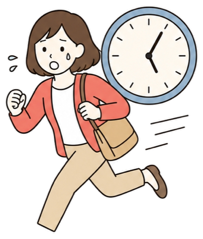
2週間
続けると変わる
見た瞬間に用途が浮かぶ
たぶん、答えられないと思います。でも、朝に聞かれていたら違いました
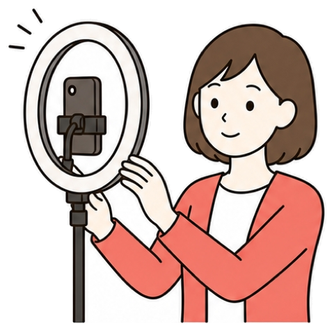
人は、数えると決めたものしか見えていません
「今日1日、緑の服の人を数えてください」と朝に言われていたら、正確ではなくても答えられます。ネタも同じで、「常に更新する」という意識がないと、普段からネタを探すことができません。緑の服を数えてもいないのに、あとから答えようとしている。これがネタ切れの正体ですうまくなるコツは、家に帰ってから考えないことです
その場で考える
1行だけ書く
夜に形にする
「今の出来事、どのゴールに使えるか」をその場で考えて、スマホのメモに1行だけ書く
きれいにまとめようとしないでください。まとめるのは出すときの仕事。ここでやるのは、拾うことだけです
毎回ゼロから考えなくていい。今日の出来事をどれかに乗せるだけです
「作り置きが傷む原因、9割これ。熱いまま蓋してる」
「3年前、残高が4桁になって会計止められたことある」
「化粧水にお金かけるのは、自分の機嫌がいちばん安上がりだから」
「反対する人はだいたいやったことがない人だよ」
①は、情報だけで終わらせないこと。一言足すだけで、あなたの話になります
迷ったら①か⑥から始めてください。7つ全部を毎日やる必要はありません
型を使うというのは、この一言を足すかどうかの話です
「作り置きが傷む原因、9割これ。熱いまま蓋してる」
正しいけれど、誰の話でもない
「これ、3回失敗してやっと分かったんだけど」
同じ情報が、あなたの話に変わる
一見、いちばん正しいことをやっているように見えるところです
▼
ネタが出るようになってきた人が、次にここへ落ちます
狙うのは、2つの失敗のちょうど真ん中です
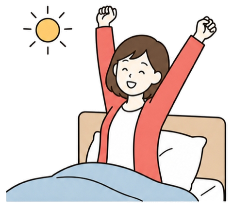
真ん中とは、出来事の中にあなたの考えが乗っている状態
「ランチ食べた」で終わらせず、「打ち合わせの前は必ず軽くしか食べない」と続ける。それだけで、ランチの話が仕事の姿勢の話になります。今日やることは4つ。ゴールを1つ選ぶ、出来事を3つ書き出す、こじつけられそうなものを1つ選ぶ、7つの型のどれに乗せるかを決めるテクニックの話ではなく、順番の話です
才能の話ではありません。入り口を間違えているだけです
うまくなりたい人ほど、先にテクニックを探しにいく
上手い人のストーリーズを、ちゃんと見ていない
手本がないまま量を出して、下手なまま数だけ増える
リールやフィード投稿のリサーチはめちゃくちゃ上手いのに、ストーリーズまでリサーチしている人は、ほとんどいません
つまり、ここは差がつきやすい場所です。上達の順番は決まっているので、次の1枚で全体を先に出します
この順番が守れているかどうかで、伸び方がまったく変わります
分解する
置き換えて書く
量を出す
上手い人を分解して、スクショを見ながら自分の出来事に置き換えて、そこではじめて量を出す
逆から入った人は、だいたい途中で止まります。その理由を、次の1枚で見ます
どちらも一見、正しい努力に見えるところが厄介です
見るのと分解するのは、別の作業です。分解のほうは人数を絞ります
5人から10人。毎日ストーリーズを見る
「うまいな」と思ったら一言メモを残す
そこから5人だけ選ぶ
むしろ他ジャンルを混ぜる
料理の人が、お金の発信者の展開から学べる
「うまいなあ」で終わって、次の日には忘れています
毎日スクショ
フォルダに保存
内容で分類
ベンチマークにした5人のストーリーズを毎日スクショで撮り、その人専用のフォルダに保存して、どういう内容だったかで分類する
分類したところまでやった人だけが、「この人はいつもこの入り方をする」に気づきます
なんとなく眺めるのをやめて、見る場所を決めてしまいます
どこから入って、どこへ着地したか
日々の出来事から価値観の発信までに、何枚使っているか
どの言葉を残して、どの言葉を捨てているか
出来事と伝えたいことを、どうつないでいるか
4番目がいちばん学びが大きいところです。前の回で「こじつけていい」と書いた、その実物がここにあります
実物を1枚見ると、自分のものとの差がその場で分かります
我ながら地味な作業です。でも、そこまでやったから書けるようになりました
5人の発信者のストーリーズを、365日、毎日スクショで撮っていました
撮って、フォルダに保存して、どういう内容なのかの分類まで分けていました。逆に言うと、ここを飛ばして書けるようになった人を、僕は見たことがありません理由は3つあります。全部、書き始めてから効いてきます
手が止まったときに、開く場所ができる。ネタが出ない日でも、フォルダを開けば手本が並んでいます
分類しているうちに、型が見えてくる。自分で分類した人だけが「この人はいつもこの入り方をする」に気づきます
自分の下手さが具体的に分かる。並べて比べると、どこが違うのかが言葉になります
1年やれとは言いません。ここまでで、見える景色が変わります
5人
本気で分解する数
他ジャンルを1〜2人混ぜる
1ヶ月
まずはここまで
それだけで景色が変わる
90時間
1日15分×365日
書く側に回せる時間
僕がやっていた頃は、本当に手で撮って手で入れていました
▼
自動にしたぶん、ここを外すと集めただけで終わります
ここで必ず、乖離が起きます。そして、それが目的です
「うまいなあ」で終わる
どこが違うのかが、言葉にならない
どこで飽きるのか
どの1枚が余計なのか
どこで説明しすぎているのか
置き換える作業を繰り返していると、あるとき腑に落ちます
量は、目的ではなく通り道です
「この出来事なら、こう入って、ここで自分の話に寄せて、ここで問いかける」。これが自分の中に何パターンかできたら、もう手本がなくても書けます。そこまで持っていくのに量が要る、という話です。「毎日◯枚出すこと」がゴールになると、中身のない枚数だけが増えますここも直しておきたいところです。枚数は、計算するものです
1枚で完結するなら1枚でいい。5枚必要なら5枚使っていい
「今日は撮影日にします」。見ている人には、どうでもいい情報です
親指が止まらないので、そのまま次へ送られて終わる
最初の1枚で見る姿勢を作れなければ、2枚目以降は存在しない
1枚目の役割は、内容を伝えることではなく親指を止めること
どれも1行で書けます。リールの冒頭2秒と、まったく同じ考え方です
「作り置き、3日で全部だめにした…」
「2万円、無駄にしてたことに今日気づいた」
「これ、言うか迷ったんだけど」
「作り置きが3日もたない人、これだけ見て」
失敗や損は、いちばん止まります。名指しは、自分のことだと分かった人だけが止まります
1枚目は約束です。約束したぶんは、必ず返してください
最後に、書くときの向き先の話です
フォロワーが1万人いて、100人にも買ってもらえない
「たくさんの人に届くように」と書くと、誰にも刺さらない
1万人のうち1,000人に深く刺さって、1,000人が動く
自分のターゲットが誰なのかを、自分が分かっている
いちばん書きやすいのは、過去の自分に置き換えることです
書く相手は、インスタを始めたばかりの頃のあなた自身
あなたの発信で、生活が少し良い方向に変わる人。その1人に刺されば、同じ状態の人にも同じように刺さります。閲覧数が3人だった日に折れる人が本当に多いですが、3人の前で手を抜く人が、3,000人の前で急にいい話ができるようになることはありません内容は同じままです。7つだけ渡します
量を出せるようになったら、ここからが精度の話です
全部覚えなくていいので、自分がやりがちなものを2つ見つけてください
ふわっとした言葉は、読み飛ばされる
誰にも刺さらない言葉を、「私のことかも」に変える
実績は自慢のためでなく、聞く理由を渡すため
知りたいのはやり方でなく、やった先にある景色
①は、期間・数字・ステップ数のどれかを足すこと。なかでもステップ数を入れると「これだけやればいいのか」が伝わります
商品や告知を出すときに、いちばん差が出るところです
いちばん多いのがこれです。ふわっとした言葉は、読み飛ばされます
この方法で、無理なくきれいになれるよ
どこがどう変わるのかが、1つも書かれていない
30日で、朝の支度が10分短くなった方法
期間・数字・どこが・手段・ステップ数のどれかを足す
正しいけれど誰にも刺さらない言葉、というのがあります
人が知りたいのは、やり方そのものではありません
献立を1週間ぶん決めて、まとめ買いしてる
やっていることの説明で終わっている
夕方に「今日なに作ろう」って考える時間が、なくなった
先に景色、あとから手段。順番だけの話です
言っていることは同じでも、下のほうは自分がその場にいる絵が浮かびます
ストーリーズは1枚の文字数が少ないので、ここが特に効きます
この商品は想像以上に品質が良かった
きちんと説明しようとするほど、文章は堅くなる
正直、ここまでとは思ってなかった…
心の声をそのまま置くと、読んでいる人がその場に入ってくる
なぜ実績を出すのか。偉く見せるためではありません
条件は何も変わっていません。暮らしの側から言い直しただけです
駅から徒歩8分、南向き、二重サッシです
正確なのに、ぴんと来ない
朝、洗濯物を干してから出られますよ
その部屋で暮らしている絵が、その場で浮かぶ
人は金額そのものではなく、何と比べるかで高い安いを決めています
5万円
「1本5万円です」
高いとしか思えない
30年
これから使う年数
比べる相手を変えるだけ
1,600円
1年あたりにすると
急に判断できるようになる
言い換えは、告知のときにいちばん効きます
7つのうち6つが入っていますが、押しつけがましくはないはずです
「作り置きのコツ」→「日曜の90分で1週間ぶん」
「夕方に今日なに作ろうと考えてる人向け」
「来週の夕方が丸ごと変わるよ」
「正直、去年の私は毎週これで1時間ぶん損してた…」
残りは③と⑥。手順をそのまま渡すと言い切り、「30分見るだけで」と時間の対価を出しています
7つはどれも効きます。だからこそ、入れる数を決めておきます
全部の文章を数字と煽りで固めると、逆に読まれない
全部の枚に仕掛けを入れると、読む側がそう感じ始める
1枚に1つ。1文につき1つしか使わない
新しく書く必要はありません。すでに出したものを直します
アーカイブ
メモに写す
7つを当てる
1箇所だけ直す
昨日出したストーリーズをアーカイブから開いて、1枚ぶんそのままメモに書き写す。7つを順番に当てて、引っかかったところに印をつける
全部を直そうとしないでください。1枚につき1箇所でかまいません
内容は同じです。変えたのは、自分の失敗として書いたことだけです
直したものを出し直すときに、必ず出てくる迷いです
▼
続けていると、自分の癖が見えてきます
7つのうち、いつも引っかかるのは2つくらいに固まります
その2つが、あなたの癖です。癖が分かったら、書くときにそこだけ気をつければよくなります。今日は7つのうち、自分がやりがちなものを2つ選んで、その2つだけ意識してくださいここができると、ストーリーズが一気に楽になります
ストーリーズには、投稿と違ってコメント欄がありません
「丁寧に返しましょう」はよく聞く話なので、もう一段踏み込みます
返信そのものが、相手にとって特別な出来事になる
その質問を使って、フォロワー全体に伝えたいことを伝える
この2つは別物です。1つ目は目の前の1人に、2つ目は見ている全員に効きます
順番にやります。まずは、返すこと自体にどれだけ力があるかから
数あるうちの1通に見えても、相手にとっては勇気を出した1通です
どうせ返ってこないだろうな、と思っている
忙しそうだし、やめておこうかな、と手が止まる
初めて送るの、緊張するな。それでも送ってくれている
インスタは他のSNSよりDMの文化が強いので、ここが効きます
名前が分かる人には、名前を呼ぶ。それだけで「数あるうちの1通」ではなくなります
絵文字を使う。文章だけだと、怒っているように見えることがあります
聞かれたことに、ひとつ足して返す。3つ目が本体です。次の1枚で中身を出します
「作り置き、いつも3日目にはだめになります」というDMが来たとします
共感する
過去の自分
どうなったか
次の一歩
ひとこと
「分かります、私も最初は同じでした」→「熱いまま蓋をしていて、毎週捨ててました」→「粗熱を取るようにしたら、5日もつようになりました」
→「まずは今週、一品だけで試してみてください」→「またどうなったか教えてください！」
難しいことを考える必要はありません。目の前の1人のために全力で答えるだけです
「粗熱をしっかり取ってから詰めるといいですよ！」
正しい。正しいですが、これで終わると検索と同じ
共感 → 過去の自分 →どうなったか → 次の一歩 →ひとこと
相手からの返信も、丁寧になる
タメ口で書く、というルールをそのまま持ち込まないでください
これは、才能でもセンスでもありません
誰でもできることです。でも、誰もが面倒くさがってやらないことでもあります
いちばんもったいないのは、フォロワーが増えるにつれて慣れてしまい、目の前の人への態度が雑になることです。最初の1通が嬉しかった感覚を、忘れないでくださいもらった質問を、ストーリーズで返す。やり方は2つあります
思ったことを一言だけ書いて、終わってしまう形です
質問者以外には、何も残らない。載せる意味がない
質問の文面を載せると、他の人も「聞いていいんだ」と思う
なぜそう思うかが無いと、あなたの考え方が伝わらない
質問への回答は目的ではなく、過程です
まず答える
なぜそう思うか
どうなってほしいか
この順番で書くと、質問した1人への回答であると同時に、「このアカウントはこういう考え方の場所です」という表明になります
目的は、その質問から何をフォロワー全体に伝えるか。答えることのほうではありません
「気にせずやっちゃいましょう！」だと、他の人には何も残りません
同じ質問なのに、届く範囲がまるごと変わります
「3〜4日です」
正しい答え。でも、質問した1人にしか届かない
「加熱したものは3〜4日。ただ、私はもたせることより食べ切れる量にすることを大事にしてます」
「作りすぎて捨てるのが、いちばんしんどかったので」
最初は全員そうです。来ない時期にやることがあります
▼
集まらないうちは、集まっている人の形を真似しないでください
自分が見ているアカウントに、DMを送ってみる。送る側の緊張が分かると、返信の温度が変わります
考えなくても押せるものから始める。2択のスタンプでも十分。1回答えた人は、次のハードルが下がります
最初のうちは、自分で想定した質問に自分で答えていい。「もし今から始めるとしたら」の形にすれば同じ効果が出ます
自分の主張を、他人の声に乗せて届ける。これがいちばん強い形です
ここから先は、上の2つが回るようになってからの話です
コメントやDMが一気に増える。コメント欄が長い投稿は伸びます
誰が興味を持っているかが、名前が見える形で残る
「これについてまとめたものがあるので、欲しい人は『◯◯』ってコメントしてください」。そう言って、DMで送るだけです
3つ目は、1対1で話すきっかけができること。ただし「欲しい」と思ってもらえていないと、誰も動きません
リールの締めでも、ストーリーズでも、まったく同じ考え方が使えます
調べたら出てくることを言わない。借り物は1回で終わる
中身をそのまま言わない。「あることを1つ変えるだけ」
「20種類くらい試して、残ったのがこれです」
最後にもう一度言う。中盤で言ったことは、ほぼ覚えていません
②は8-4でやった「はてなの残し方」と同じ技術です。情報を1つだけ隠す。しかも、この言い方だと検索もできません
中身の価値より、その先に何があるかのほうが人を動かします
今日やることは3つ。質問スタンプを1つ置くところから始めます
強いのは、自分の主張を、他人の声に乗せて届ける形です
届いた質問に、答え → なぜそう思うか → どうなってほしいか、の順で答える。答える前に「この回答で、全員に何を伝えたいか」を1行決めておく。なお、コメントが増えてくると手で1件ずつDMを送るのが追いつかなくなります。自動で届ける仕組みは、この章の最後でまるごと扱います中身が決まったので、やっと見た目の話をします
中身が決まってからでないと、見た目は決められません
フォントも文字の大きさも改行位置も、自分で考えても答えは出ません
10枚選ぶ
同じ見た目で作る
並べて見比べる
答えはもう、うまい人の画面の中にあります。前の回で溜めてもらったスクショが、そのまま教材になります
内容まで同じにしないでください。真似するのはデザインだけ。文章は自分のものにしてください
作って終わりにすると、この練習の意味がほとんどなくなります
比べると、自分のほうだけ文字のバランスがおかしいことに気づきます
文字が大きすぎたり、余白が足りなかったり、行間が詰まりすぎていたり。自分の画面だけを見ていると、それが普通に見えてしまうので、いつまでも気づけません。10枚やれば十分です。それ以上は、実戦で覚えたほうが早いですデザインの話は範囲が広く見えますが、押さえるのはここだけです
画面の上と下はふさがっています。文字は真ん中の帯に置いて、上下の端は空けておく
長くても数秒で次に送られます。パッと見て読める量に抑える。1枚に3行まで
写真の上にそのまま白い文字を置くと、明るい部分で消えます。よくある崩れ方です
ここに文字を重ねると、アプリの表示と喧嘩して読めなくなります
1枚に詰め込みそうになったら、2枚に分ける。枚数は増えていいんです
文字がないのではありません。背景に溶けているだけです
写真の上に、そのまま白い文字を置く
明るい部分で、文字が消える
背景を一色にしてしまう
文字に影や背景色をつける
写真の暗い部分に文字を寄せる
なぜ上下に情報を寄せているのか、という話です
見ている人は、指で送りながら流している状態です
高速の案内看板は、「東京 50km」くらいの短さしか書かれていません
時速100kmで走りながら読めるのは、それくらいだからです。あそこに3行の説明文を書いても、誰も読めません。ストーリーズも同じで、止まって読んでくれる前提で書かないでください。看板だと思って書くと、ちょうどよくなります物はそこにあるのに、見えない。写真の上の白文字はこれと同じです
どこにシャツがあるか分かりにくい
干していないのではなく、背景に溶けている
背景を暗くするか、文字の側に色を敷く
やることは「差をつける」だけ
機能はたくさんありますが、実際に使うのはここだけです
ペンを選んで色を選び、画面を長押しすると全面に。迷ったらこれ
文字に背景色をつけるか、影をつけて写真から浮かせる
目立たせたい部分だけ選択して変える。1枚に1箇所まで
アンダーバーを並べて文字の下に置く。手で引くと曲がります
押す場所はアプリの更新でよく変わります。ここでは何をするのかだけ覚えて、場所は自分の画面で探してください
気合いが入っているときほど、この形になります
大きい＝伝わる、ではありません。1枚に1つだけ大きくする
色を変える、下線、絵文字。全部やると、どこが大事か分からない
端から端まで文字が入ると、詰まって見える。左右に少し残す
最後のひとつが、いちばん多い失敗です
先に自分の形を決めてしまえば、考えることは「何を書くか」だけになります
3色
使う色の数
5-6で決めた世界観の3色
40文字
1枚の文字数の上限
超えたら2枚に分ける
30秒
1枚を作る時間
ここに時間を使いすぎない
同じでいいです。むしろ、揃っているほうがいい
崩れたと感じたら、上から順に当てていってください
1枚に3行まで。それ以上入っていたら、迷わず2枚に割ってください
写真の上に白文字は、場所によって消えます。背景を敷くか、暗い部分に文字を寄せる
スタンプやGIFを置きすぎると、文字が読めません。1枚につき強調は1箇所です
ここを取り違えると、時間だけ増えて反応は変わりません
整える目的は、おしゃれに見せることではなくあなただと分かるようにすること
今日やることは2つ。溜めたスクショから読みやすいものを10枚選んで、うち3枚をデザインだけ真似して作ってみる。あわせて、自分が使う色3つとフォント1つを決めてしまいましょうここまでの全部を、1回で使います
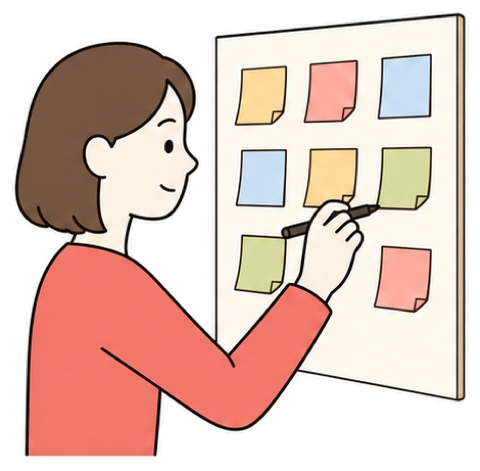
やるのは、平日夜15分で作り置きを発信している人の1日です
この順番でやると、毎日15分で1日ぶんが組み上がります
ゴールを決める
型に乗せる
言葉を見直す
見た目を整える
この章でやってきたことを、そのまま並べただけです。中身が先、見た目が最後。この順番は動かしません
1つずつ、実際に手を動かしていきます
見た人にどうなってほしいか。今日は「親近感」に決めました
使うのは「自分の考え方を出す」型。6枚で組み立てます
ここで手が止まる人が、とても多いところでもあります
枚数は、着地までに何枚要るかで決めました。今回は6枚必要でした
リールの台本（STEP8）と、まったく同じ考え方が入っています
止める
残す
満たす
動かす
1枚目で「作れなかった」と言うから、いつもと違うことが起きたと分かる。2〜3枚目の状況と気持ちが、最後まで見る理由を作る
4〜5枚目で、やっと本業の作り置きにつながる。6枚目の質問スタンプで、返事をもらう
言っていないのに、伝わっている。これが、直接言うより効く形です
5枚目まで、一度も「作り置きをやりましょう」と言っていません
それなのに、5枚目を見た人は「作り置きって便利だな」と思っています。売り込みを弱めるのではなく、売り込みの前に置く話を厚くする。ストーリーズは、これができる唯一の場所です実際に画面へ入れる文章です。これくらいの分量だと思ってください
「6時半に起きるはずだったけど7時50分に起きてしまった…」 （背景：散らかったキッチンの写真）
「子どもの朝ごはん、間に合わないやつ😱起きた瞬間に血の気が引いた」 （背景：一色）
「作り置きの発信してる人間が何やってんだ、って自分でも思った（笑）」 （背景：一色）
全部で6枚、書いた文字は合計150字ほどです
リールの台本より、はるかに短いですよね
どこにもありません。独り言に近い書き方です
感情のところに1つだけ。2枚目の😱が「血の気が引いた」の代わり
多くても2行。これ以上入れると読まれません
1枚に1箇所だけ。強調を入れない枚があってもいい
4枚目でやっと本業に触れています。6枚目は自分の話をせずに終わっています。ここで語ると、質問が来なくなります
短く・多く・正直に。これが基本の形です
6枚
1日ぶんの枚数
朝1枚・昼2枚・夜3枚
150字
6枚ぶんの文字数
リールの台本よりずっと短い
20分
作るのにかかる時間
1枚あたり30秒で作れれば十分
4〜5枚目でやっと本業に触れる理由が、ここにあります
6枚目を問いかけで終える理由です。大事なのは、返しやすさです
自分の話だけをして終わる
相手は投げ返せない
「みなさんの人生観を教えてください」は重すぎる
相手が投げ返せる球を投げる
「朝ごはん作れなかった日ってどうしてる？」
誰でも1秒で投げ返せる
1日ぶんを作り切って終わり、ではありません
今日の最後の1枚が、明日の1枚目を連れてきます
連続ドラマは、いいところで終わって次回予告が入ります。あれがあるから、来週も見ようと思う。6枚目の質問スタンプは、これと同じ働きをします。返ってきた答えが明日のネタになるので、自分でネタを探さなくてよくなります組み立てたら、7つの言い換えを当てます。引っかかったところだけ直します
ここも、時間をかけません。決めているのはこれだけです
生成り・こげ茶・差し色のオレンジの3色。これ以外は使わない。フォントは1種類に固定
文字は画面の真ん中の帯、毎回同じ高さ。1枚の文字数は40文字まで
写真を使うのは1・4・5枚目。残り3枚は背景を一色にして文字だけ。見えにくいところは背景を敷いて浮かせる
作ったら、出す時間も決めておきます
出す直前に、これだけ見てください
見るのは1枚目の閲覧数と、どこまで残ったかの2つだけです
毎日ゼロから考えると続かないので、回し方を決めてしまいます
ゴールを散らす
質問から始める
リールに回す
週の前半は共感・親近感、後半は教育、週末は行動。毎日「親近感」だと、それはそれで飽きられます
前の日の質問スタンプから始めると、自分でネタを探すより楽で反応もいい。この3つを回すだけで、ネタ切れはほぼ起きなくなります
やることは、前日・当日・翌日の3つだけです
リールは新しい人を連れてくる。ストーリーズはその人を残す
この2つは別々のものではなく、往復させるものです
ここまでで、1日ぶんを自分の手で組み立てられるようになりました。最初の1週間は、返信ゼロが普通です。4日目にネタ切れを感じるところまでが、この練習の目的でした。1週間続けた人と、3日でやめた人。半年後の差は、想像しているより大きいです気合いでどうにかする場所ではありません
コメントが10件なら手で返せます。30件を超えたあたりから、無理になります
朝12件たまる
1人ずつ送る
12分かかる
また3件増える
1件あたり1分としても12分。これだけなら、まだ耐えられます。問題はここからです
配る相手が増えるほど、いちばん大事な「返す」時間から削られていきます
思っているよりずっと短いです。ここが、手作業のいちばんの弱点です
ここが、いちばん見えにくい損です
受け取れなかった人は、二度と言ってきません
「返事が来なかった」と思われて終わりです。こちらは「あとで返そう」と思っているだけなのに、相手からは無視されたように見えます。だから、ここは道具に任せる場所です。気合いでどうにかする場所ではありません難しい仕組みではありません。やることは2つだけです
1つ目がとくに大きいです
フォローしている人にだけ送る、という条件をつけられる。フォローされる理由が、その場で1つ生まれます
送ったあとに、2通目・3通目を続けて送れる。ただし、使い方には線があります（後述）
誰が受け取ったかが残るので、あとから数えられる。次に配るときの手がかりになります
道具はいくつもありますが、よく使われているのはこのあたりです
性能で比べないでください。続けられるかどうかで選びます
日本語で使える
無料で試せる
自分で調べきれる
英語で止まる人は、それだけで手が止まります。そして、1件も配っていない段階で月額を払う必要はありません
1つ選んで、1回配ってみる。合わなければ替えればいい話です
最初の1つは、触ってみないと分かりません
道具選びで1週間悩む。その間、1件も配れていない
配るものが無い段階で、月額の契約から入る
その日に1つ入れて配った人のほうが、結果的に早く進みます
はっきり書いておきます。理由があります
動画のほうが、画面が動いているぶん文章より速いです
道具名＋設定
1年以内を1本
見ながら触る
YouTubeで「道具の名前＋設定」で検索して、いちばん新しい動画を1本選ぶ。1年以内のものを選んでください
それを見ながら、同じ画面を触る。読んでから触るのではなく、見ながら触るのがいちばん速いです
難しいのは設定ではなく、次に決める中身のほうです
10分
アカウントを作る
インスタとつなぐところまで
15分
1つ登録する
キーワードと、送るメッセージ
5分
自分で試す
もう1つのアカウントで受け取る
ここが決まっていないと、設定画面の前で固まります
打ちやすさが全部。ひらがなかカタカナで3〜5文字
1つだけにする。2つあると迷って、どちらも受け取られない
3つ目は1通目の文面。「お礼」「中身」「一言」の3つで足ります
「使ってみて、分からないところがあったら気軽に聞いてください」。この一言が入っているだけで、返事が返ってきます
打ち間違えると届きません。指が止まる形にしないことがすべてです
自動で送れるようになると、やりすぎる人が必ず出ます
1通目のあとに2通目、3通目。ただの通知の連打です
受け取った5分後に「実は今、こういう講座を」。いちばん多い事故です
フォロー＋いいね＋保存＋コメント。増えるほど、受け取る人は減ります
2通目を送るなら翌日以降。条件をつけるなら、フォローだけにしてください
自動で届いたあとに返事が来たら、それは自分で返してください
配るのは自動でいい。返すのは自分でやる
自動化していいのは、同じものを同じように配る作業だけです。返ってきた言葉に返すところは、自動化した瞬間に価値がなくなります。道具は、あなたが人に向き合う時間を作るために入れるもの。時間を作った結果、誰とも向き合わなくなったら本末転倒ですフォロワー1,000〜2,000人で、ストーリーズで1回告知した場合です
5〜15件
告知した日
ここがいちばん多い
10〜25件
合計の落ち着き先
翌日2〜5件、あとは1〜2件
50〜100件
リールで告知したら
ここは手では回りません
1回配って3件しか来なかった。そのときに見るのは、道具ではありません
中身を見る
最後の一言
キーワード
中身が「調べたら出てくるもの」になっていないか。何がもらえるのかを、最後にもう一度言ったか。キーワードに漢字が混ざっていないか
道具の設定を疑うのは、いちばん最後です。届かない原因は、ほぼ全部その手前にあります
念のため書いておきます。全員に必要なものではありません
出し方、声の拾い方、見た目、1日ぶんの組み立て、そして配る仕組み
ストーリーズという道具は、全部そろいました
この回のワークは5つ。道具を1つ選ぶ、YouTubeで1年以内の動画を1本見る、キーワード・届けるもの・1通目の3つを決める、設定してもう1つのアカウントで受け取ってみる、次の投稿で実際に1回配ってみる。次のSTEP14では、この道具を使って「この人から買いたい」をつくる話に入ります